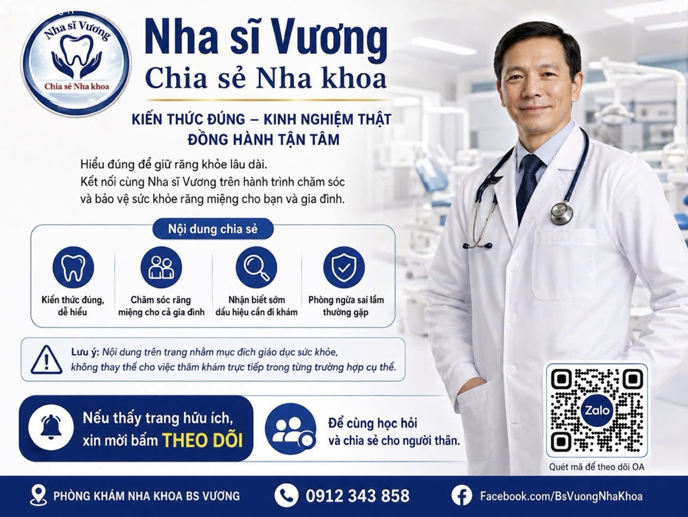
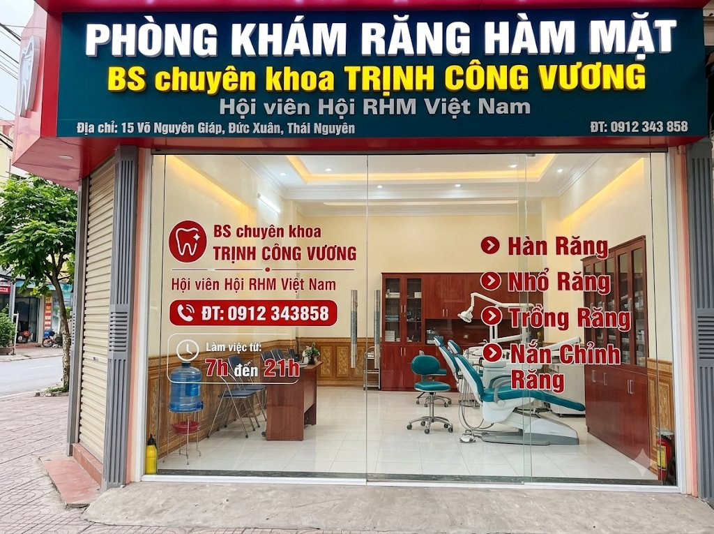
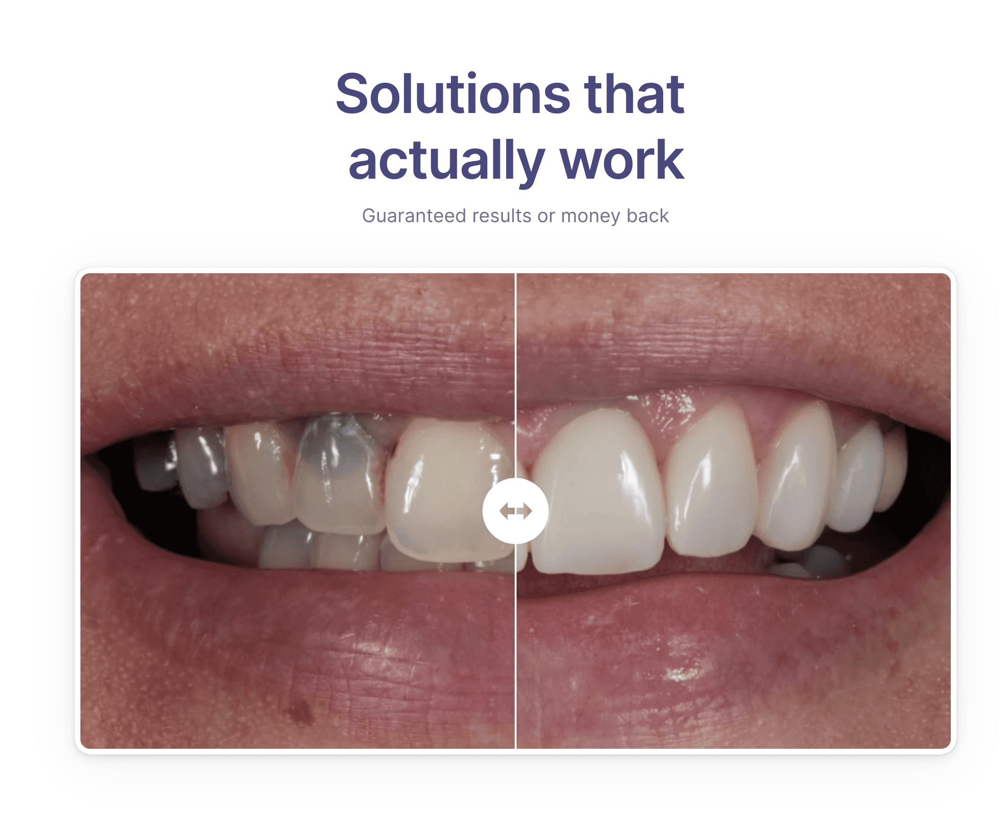
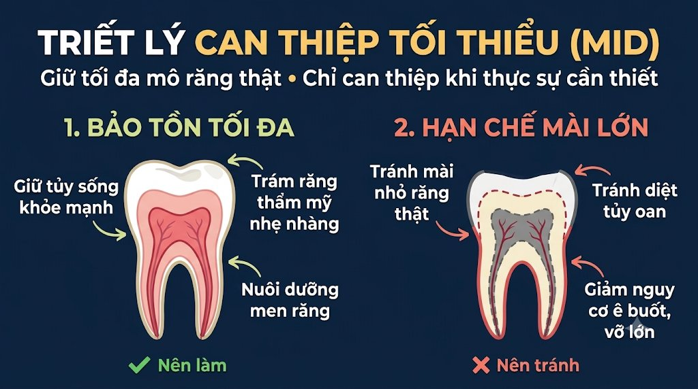

Nha khoa dự phòng
Kiểm soát mảng bám, hướng dẫn vệ sinh cá nhân hóa và phát hiện sớm tổn thương để giảm can thiệp xâm lấn.
Không gian chăm sóc răng miệng đề cao sự lắng nghe, chẩn đoán dựa trên y học chứng cứ và ưu tiên bảo tồn tối đa mô răng thật cho từng thành viên trong gia đình.
Tư vấn & sắp xếp lịch hẹn trước: 0912 343 858 (Điện thoại / Zalo)

Mỗi người có tình trạng răng miệng, bệnh toàn thân và nhu cầu khác nhau. Chỉ định điều trị luôn dựa trên thăm khám trực tiếp, đánh giá nguy cơ và trao đổi minh bạch.
Kiểm soát mảng bám, hướng dẫn vệ sinh cá nhân hóa và phát hiện sớm tổn thương để giảm can thiệp xâm lấn.
Giữ tối đa mô răng lành và sự sống của tủy răng; chỉ can thiệp đúng mức cần thiết theo mức độ tổn thương.
Đặc biệt chú trọng an toàn cho người cao tuổi, trẻ nhỏ và người có bệnh lý nền như tim mạch, đái tháo đường.
Thông tin giáo dục sức khỏe đối chiếu theo khuyến cáo của WHO, ADA, FDI; không hứa hẹn kết quả tuyệt đối.

Đồng hành cùng nhiều thế hệ gia đình với định hướng giải thích rõ nguyên nhân, ưu tiên giải pháp nhẹ nhàng và theo dõi lâu dài sau điều trị.

Chọn nhóm nhu cầu bạn đang quan tâm để tìm hiểu kiến thức nền tảng và chuẩn bị tốt hơn trước buổi hẹn khám trực tiếp.
Đánh giá nguy cơ sâu răng, mòn cổ răng, hướng dẫn chải răng đúng kỹ thuật, dùng Fluoride hợp lý và kiểm tra định kỳ.
Đánh giá chảy máu nướu, cao răng, viêm lợi và viêm nha chu thầm lặng nhằm giữ mô nâng đỡ răng ổn định lâu dài.
Phân biệt tổn thương có thể tái khoáng với lỗ sâu cần trám sinh học, hạn chế mài mô răng lành quá mức.
Đánh giá răng nứt ngầm, sâu chân răng, đau khi nhai và xử trí theo nguyên nhân thực thể thay vì lạm dụng kháng sinh.
Chăm sóc răng sữa, bảo vệ răng hàm số 6, phòng ngừa sún răng và theo dõi thời điểm vàng nắn chỉnh răng cho trẻ.
Chăm sóc răng miệng khi có bệnh nền tim mạch, đái tháo đường, khô miệng và cân nhắc giữ răng thật hay phục hình.
Mỗi buổi hẹn được sắp xếp trước qua điện thoại hoặc Zalo để bạn có đủ thời gian trao đổi cùng bác sĩ.
Ghi nhận triệu chứng, thói quen chăm sóc, tiền sử bệnh nền và thuốc đang sử dụng.
Kiểm tra kỹ mô răng, nướu, khớp cắn và các dấu hiệu tổn thương tiềm ẩn.
Giải thích nguyên nhân dễ hiểu, phân tích rõ mức độ cần can thiệp hay theo dõi.
Ưu tiên phương án bảo tồn răng thật, nhẹ nhàng và phù hợp điều kiện từng người.
Hướng dẫn chăm sóc tại nhà và hẹn tái khám định kỳ để giữ kết quả bền vững.
Toàn bộ bài viết được biên soạn theo triết lý bảo tồn răng thật (MID). Bạn có thể tìm theo từ khóa hoặc lọc theo nhóm chủ đề bên dưới.
Hỗ trợ giải thích kiến thức bảo tồn mô răng thật, chăm sóc phòng ngừa cho người trung niên, cao tuổi và gia đình.
Hãy chọn một câu hỏi gợi ý ở trên hoặc nhập băn khoăn của bạn (tối đa 1000 ký tự) rồi bấm “Nhận tư vấn kiến thức MID” để xem giải thích theo nguyên tắc bảo tồn răng thật.
Không tìm thấy bài viết phù hợp với từ khóa hiện tại. Bạn hãy thử từ khóa ngắn hơn hoặc chọn “Tất cả”.
Hình ảnh được sử dụng minh bạch, tôn trọng tuyệt đối quyền riêng tư người bệnh và không phóng đại kết quả điều trị.




Thông tin giải đáp ngắn gọn giúp bạn chuẩn bị chủ động và nhận biết các dấu hiệu cần xử trí sớm.
Không hẳn. Nhiều bệnh lý như sâu răng sớm, viêm nướu, tiêu xương nha chu hoặc tổn thương quanh chóp mạn tính có thể tiến triển âm thầm một thời gian trước khi gây đau.
Có thể ê buốt nhẹ thoáng qua vài ngày vì vùng cổ răng vốn bị cao răng che phủ được làm sạch trở lại. Nếu ê buốt kéo dài hoặc đau tăng, bạn nên kiểm tra lại.
Không tự ý ngừng thuốc chống đông hoặc thuốc tim mạch. Hãy mang theo đơn thuốc hoặc tên thuốc đang dùng để bác sĩ nha khoa phối hợp cùng bác sĩ điều trị bệnh nền đánh giá phương án an toàn.
Bạn có thể chọn nhanh nhu cầu ở phần Liên hệ bên dưới để chuyển thẳng sang Zalo của Bác sĩ Vương, hoặc gọi điện/nhắn Zalo trực tiếp tới số 0912 343 858 (website không thu thập thông tin cá nhân trực tuyến). Lịch hẹn chính thức sẽ được phòng khám xác nhận trực tiếp với bạn.
Khi có sốt, sưng lan vùng mặt hoặc sàn miệng, khó nuốt, khó thở, khít hàm nhiều hoặc chảy máu không cầm sau chấn thương hay nhổ răng, cần đi khám hoặc cấp cứu y tế ngay.
Tổng quan gánh nặng bệnh răng miệng, phòng ngừa dựa trên kiểm soát đường, vệ sinh răng miệng và chăm sóc cộng đồng.
Tài liệu giáo dục sức khỏe răng miệng dành cho người dân về chải răng, kẽ răng, fluoride, nướu và khám định kỳ.
Tài liệu chuyên môn toàn cầu về phòng ngừa sâu răng, nha khoa can thiệp tối thiểu và chăm sóc theo suốt vòng đời.
Để hỏi lịch khám, dịch vụ và chi phí hiện hành, vui lòng gọi điện, nhắn tin Zalo hoặc gửi trước thông tin yêu cầu bên cạnh để phòng khám sắp xếp thời gian đón tiếp chu đáo.
Để bảo mật tuyệt đối thông tin người bệnh, website không thu thập Họ tên, Số điện thoại hay thông tin bệnh lý. Bạn có thể chọn nhanh nhu cầu bên dưới rồi chuyển thẳng sang Zalo riêng của Bác sĩ để trao đổi trực tiếp.